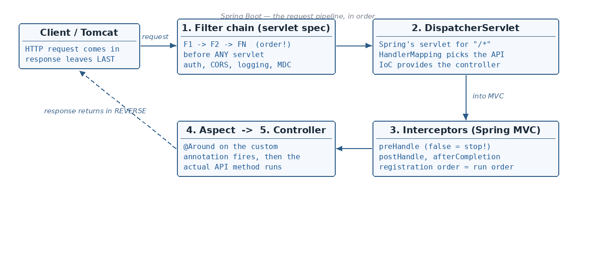

@Target
☕ 11 min read · 🎬 Video walkthrough · 📊 UML diagram · 💻 Runnable code
⚡ In a nutshell — What an interceptor is and where it sits in the request pipeline · Writing a HandlerInterceptor (preHandle / postHandle / afterCompletion) and registering it · Creating custom annotations — @Target, @Retention and annotation methods (elements) · Building an annotation-driven interceptor with AOP (@Around)
Interceptor: it is a mediator, which gets invoked before or after your actual code.

To understand where it can step in, recall what happens when a request arrives. Our application is deployed inside Tomcat (the servlet container), and the DispatcherServlet drives everything:
So an interceptor can hook in before the controller method (step 3) runs, and after it returns — without touching the controller code itself.
Step 1 — implement HandlerInterceptor. It gives us three hook methods:
preHandle — before the controller methodpostHandle — after the controller methodafterCompletion — after the complete request is finished@Component
public class MyCustomInterceptor implements HandlerInterceptor {
// runs BEFORE the controller method; return false = stop the request here
@Override
public boolean preHandle(HttpServletRequest request, HttpServletResponse response,
Object handler) throws Exception {
System.out.println("preHandle: " + request.getRequestURI());
return true; // true = continue to the controller
}
// runs AFTER the controller method, before the view/response is written
@Override
public void postHandle(HttpServletRequest request, HttpServletResponse response,
Object handler, ModelAndView modelAndView) throws Exception {
System.out.println("postHandle: controller finished");
}
// runs after the COMPLETE request finished (also when an exception was thrown)
@Override
public void afterCompletion(HttpServletRequest request, HttpServletResponse response,
Object handler, Exception ex) throws Exception {
System.out.println("afterCompletion: response sent, ex = " + ex);
}
}
Step 2 — register it in a @Configuration class that implements WebMvcConfigurer:
@Configuration
public class WebConfig implements WebMvcConfigurer {
@Autowired
private MyCustomInterceptor myCustomInterceptor;
@Override
public void addInterceptors(InterceptorRegistry registry) {
registry.addInterceptor(myCustomInterceptor)
.addPathPatterns("/api/*")
.excludePathPatterns("/api/health", "/api/login");
}
}
Added: in the notes the registration line was cut off at the page edge after
.excludePathPatterns("/a…. Reconstructed above with the standard API —addPathPatternssays where the interceptor applies,excludePathPatternslists paths to skip (health checks, login, static resources are typical exclusions).
The second way to intercept (section 5) is driven by a custom annotation. Creating one is tiny:
public @interface MyCustomAnnotation {
}
Two meta-annotations control how it behaves:
This meta-annotation tells where we can apply the particular annotation: on a method, or class, or constructor etc.
@Target(ElementType.METHOD) // only on methods
@Target({ElementType.METHOD,
ElementType.CONSTRUCTOR,
ElementType.PARAMETER,
ElementType.FIELD}) // several places at once
This meta-annotation tells how the particular annotation will be stored in Java:
RetentionPolicy.SOURCE — annotation will be discarded by the compiler itself; it is not even recorded in the .class file. Example: @Override.RetentionPolicy.CLASS — annotation will be recorded in the .class file but ignored by the JVM during run time.RetentionPolicy.RUNTIME — annotation will be recorded in the .class file and is also available during runtime (via reflection).@Retention(RetentionPolicy.SOURCE)
Good to know: for an annotation that an interceptor/aspect must read while the app is running,
RetentionPolicy.RUNTIMEis the only choice — with SOURCE or CLASS the annotation is invisible to reflection.Added: two more meta-annotations often asked as a follow-up:
@Inherited— if a class-level annotation is marked@Inherited, subclasses of the annotated class also "have" it (works for class annotations only, not methods/interfaces).@Documented— the annotation shows up in the generated Javadoc of whatever uses it. Spring's own stereotype annotations also show composition:@Serviceis itself annotated with@Component— that is why Spring treats every@Serviceas a component.
Annotation methods (also called elements) look like methods but behave like fields:
int, boolean, double etc.)StringClass<?>@Target(ElementType.METHOD)
@Retention(RetentionPolicy.RUNTIME)
public @interface MyCustomAnnotation {
String key() default "defaultKeyName";
}
@MyCustomAnnotation(key = "userkey")
public void updateUser() {
}
More examples — every allowed element type, with defaults:
public @interface MyCustomAnnotation {
int intKey() default 0;
String stringKey() default "defaultString";
Class<?> classTypeKey() default String.class;
MyCustomEnum enumKey() default MyCustomEnum.ENUM_VAL;
String[] stringArrayKey() default {"default1", "default2"};
int[] intArrayKey() default {1, 2};
}
How to use it?
@MyCustomAnnotation(intKey = 10, stringKey = "user",
classTypeKey = User.class, enumKey = MyCustomEnum.ENUM_VAL,
stringArrayKey = {"a", "b"}, intArrayKey = {5, 10})
public void updateUser() {
}
Added: in the notes the last argument of this usage example ran off the page edge; the array arguments above are reconstructed in the standard syntax. Elements without a
defaultare mandatory at the usage site.
Now combine both ideas: an aspect that intercepts any method carrying our custom annotation. The @Around advice runs before and after the actual method:
@Component
@Aspect
public class MyCustomInterceptor {
@Around("@annotation(com.abc.CustomInterceptor.MyCustomAnnotation)")
public Object invoke(ProceedingJoinPoint joinPoint) throws Throwable {
Method method = ((MethodSignature) joinPoint.getSignature()).getMethod();
if (method.isAnnotationPresent(MyCustomAnnotation.class)) {
MyCustomAnnotation annotation =
method.getAnnotation(MyCustomAnnotation.class);
System.out.println("before actual method, key = " + annotation.key());
}
return joinPoint.proceed(); // invoke the actual annotated method
}
}
How it works:
@annotation(...) pointcut matches every method annotated with MyCustomAnnotation.joinPoint.getSignature() is cast to MethodSignature to get the actual Method object.method.isAnnotationPresent(...) / method.getAnnotation(...) read the annotation and its element values (this is why RetentionPolicy.RUNTIME is required).joinPoint.proceed() finally runs the real method — code before it is "pre" logic, code after it is "post" logic.Added: the notes declare the advice as
voidand calljoinPoint.proceed()without returning it. In real code an@Aroundadvice should returnObjectand return the result ofproceed()— otherwise every intercepted method returnsnullto its caller. Also remember thespring-boot-starter-aopdependency, and that AOP interception has the usual proxy limits: public methods, called from another class.
Added: there is a third pattern that combines both halves of this topic without AOP. Inside a
HandlerInterceptor, theObject handlerparameter is aHandlerMethodfor controller endpoints — so you can read your custom annotation straight off the controller method. This is exactly how rate-limit / audit annotations are often wired:
@Component
public class AnnotationAwareInterceptor implements HandlerInterceptor {
@Override
public boolean preHandle(HttpServletRequest request, HttpServletResponse response,
Object handler) throws Exception {
if (handler instanceof HandlerMethod handlerMethod) { // not static resources etc.
MyCustomAnnotation annotation =
handlerMethod.getMethodAnnotation(MyCustomAnnotation.class);
if (annotation != null) {
System.out.println("endpoint marked with key = " + annotation.key());
// e.g. rate-limit check; return false + response.sendError(429) to block
}
}
return true;
}
}
When to prefer which: AOP (@Around) intercepts any bean method (services,
repositories); the HandlerInterceptor + HandlerMethod approach only sees controller
endpoints, but it also gives you the HttpServletRequest/HttpServletResponse — ideal
for HTTP concerns like rate limiting or auth checks per endpoint.
Filter: it intercepts the HTTP Request and Response before they reach the servlet.
Interceptor: it is specific to the Spring Framework, and intercepts the HTTP Request and Response before they reach the controller and after the servlet.
This is the full pipeline from the notes — the centerpiece picture of this topic:
The response travels back the very same path in reverse: Controller → Interceptors → DispatcherServlet → FN → … → F1 → Tomcat → client.
Some definitions from the notes:
"/*".jakarta.servlet) — Spring FrameworkFilterRegistrationBean.setOrder(n) — Registration order in WebMvcConfigurerServletRequest / ServletResponse — Handler (controller method) + ModelAndViewAdded: typical use-cases — filters: authentication, CORS, request/response logging, compression, setting the MDC/correlation id; interceptors: Spring-specific concerns such as audit logging per controller, adding common response headers, or checking annotations on the handler method.
A filter implements the Filter interface with three lifecycle methods:
public class MyFilter1 implements Filter {
@Override
public void init(FilterConfig filterConfig) throws ServletException {
// invoked only once — when the filter is created
}
@Override
public void doFilter(ServletRequest request, ServletResponse response,
FilterChain filterChain) throws IOException, ServletException {
System.out.println("MyFilter1 — request side"); // before the servlet
filterChain.doFilter(request, response); // pass to the next filter
System.out.println("MyFilter1 — response side"); // after the servlet
}
@Override
public void destroy() {
// invoked only once — when the filter is destroyed
}
}
filterChain.doFilter(req, resp) is the key line: it forwards the request down the chain; everything written after it runs while the response bubbles back up:
Similarly we can write MyFilter2.
Now — register both filters with FilterRegistrationBean, giving each a URL pattern and an order:
@Configuration
public class AppConfig {
@Bean
public FilterRegistrationBean<MyFilter1> myFilter1() {
FilterRegistrationBean<MyFilter1> filterRegistrationBean =
new FilterRegistrationBean<>();
filterRegistrationBean.setFilter(new MyFilter1());
filterRegistrationBean.addUrlPatterns("/*");
filterRegistrationBean.setOrder(2); // lower order runs first
return filterRegistrationBean;
}
@Bean
public FilterRegistrationBean<MyFilter2> myFilter2() {
FilterRegistrationBean<MyFilter2> filterRegistrationBean =
new FilterRegistrationBean<>();
filterRegistrationBean.setFilter(new MyFilter2());
filterRegistrationBean.addUrlPatterns("/*");
filterRegistrationBean.setOrder(1); // runs BEFORE MyFilter1
return filterRegistrationBean;
}
}
Added: a raw
Filtercan run more than once for the same request (forwards, includes, error dispatches). Spring'sOncePerRequestFilterguarantees exactly one execution per request and gives typedHttpServletRequest/HttpServletResponse— this is what Spring Security's own filters extend, and what you should extend too:
@Component // @Component alone auto-registers it for ALL URLs ("/*")
public class CorrelationIdFilter extends OncePerRequestFilter {
@Override
protected void doFilterInternal(HttpServletRequest request,
HttpServletResponse response,
FilterChain filterChain)
throws ServletException, IOException {
String correlationId = request.getHeader("X-Correlation-Id");
if (correlationId == null) correlationId = UUID.randomUUID().toString();
MDC.put("correlationId", correlationId); // every log line gets it
response.setHeader("X-Correlation-Id", correlationId);
try {
filterChain.doFilter(request, response);
} finally {
MDC.clear();
}
}
}
Ways to register a filter — and a pitfall:
FilterRegistrationBean (section above) — full control: URL patterns + order.@Component on the filter — auto-registered, but always for /* and ordered
only via @Order on the class; you cannot set URL patterns this way.@WebFilter("/api/*") + @ServletComponentScan on the main class — the servlet-spec way.Good to know: if a filter is BOTH a
@Componentand wrapped in aFilterRegistrationBean, it registers twice and runs twice. Either drop@Component, or setregistration.setEnabled(false)on the extra registration.
Exceptions — the boundary interviewers probe: an exception thrown inside a filter
happens before the DispatcherServlet, so @ControllerAdvice /
@ExceptionHandler can NOT catch it — the client gets the container's default error
page (or whatever the filter writes). Exceptions from interceptors and controllers
flow through DispatcherServlet and are handled normally. That's why security filters
write their own 401/403 JSON to the response instead of throwing.
The complete request/response pipeline with two filters and two interceptors:
For interceptors, the registration order is the execution order (a sequence):
@Override
public void addInterceptors(InterceptorRegistry registry) {
registry.addInterceptor(interceptorX); // registered first → runs first
registry.addInterceptor(interceptorY); // registered second → runs second
}
On the request the order is X → Y; on the response it reverses to Y → X:
Good to know:
preHandleruns in registration order, whilepostHandleandafterCompletionrun in reverse order — exactly like the response side of a filter chain.
SecurityFilterChain slots into exactly the Tomcat→Filter diagram from the notes.OncePerRequestFilter for your own filters — guarantees single execution even with forwards/includes.@Around (the notes' pattern) is exactly how @Timed, @RateLimiter, @Retry (Resilience4j) work — read their source as reference implementations.HandlerInterceptor (preHandle / postHandle / afterCompletion) and register it via WebMvcConfigurer → registry.addInterceptor(...).addPathPatterns("/api/*").excludePathPatterns(...).public @interface; @Target says where it can be applied, @Retention says how it is stored — SOURCE (compiler discards), CLASS (in .class, ignored by JVM), RUNTIME (visible via reflection).String, enum, Class<?>, annotations and arrays of these — with optional default values.@Component @Aspect + @Around("@annotation(...)") + MethodSignature → read the annotation, then joinPoint.proceed().init (once) / doFilter (+ filterChain.doFilter) / destroy; registered via FilterRegistrationBean with addUrlPatterns and setOrder (lower runs first).preHandle, cast handler to HandlerMethod and read the custom annotation off the endpoint — HTTP-aware interception without AOP.OncePerRequestFilter (single execution per request, typed HTTP objects); plain @Component auto-registers a filter for /* — combine with FilterRegistrationBean and it runs twice.@ControllerAdvice (they occur before DispatcherServlet); interceptor/controller exceptions do.@Target/@Retention: @Inherited (class annotation flows to subclasses), @Documented (shows in Javadoc); @Service is itself meta-annotated with @Component.Next topic: ResponseEntity and HTTP Status Codes — building responses with the builder pattern, and every status code from 100 to 502.
👏 Found this useful? Give it a few claps so more developers discover it, and follow for the whole series — every article ships with a UML diagram, runnable code, a narrated video, and a companion PDF. Happy building! 🚀